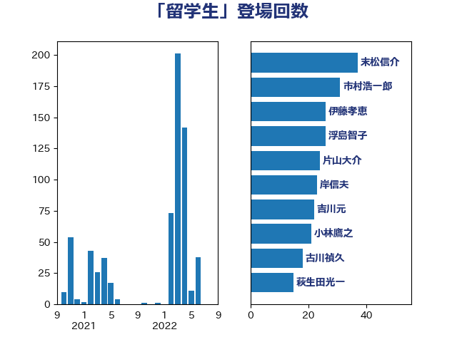

単語「留学生」

| 末松信介 | 自由民主党 | 37 回 |
| 市村浩一郎 | 日本維新の会 | 31 回 |
| 伊藤孝恵 | 国民民主党 | 26 回 |
| 浮島智子 | 公明党 | 26 回 |
| 片山大介 | 日本維新の会 | 24 回 |
| 岸信夫 | 自由民主党 | 23 回 |
| 吉川元 | 立憲民主党 | 22 回 |
| 小林鷹之 | 自由民主党 | 21 回 |
| 古川禎久 | 自由民主党 | 18 回 |
| 萩生田光一 | 自由民主党 | 15 回 |
| 井上哲士 | 日本共産党 | 12 回 |
| 高橋光男 | 公明党 | 11 回 |
| 石原正敬 | 自由民主党 | 10 回 |
| 里見隆治 | 公明党 | 10 回 |
| 伊佐進一 | 公明党 | 8 回 |
| 谷合正明 | 公明党 | 8 回 |
| 上川陽子 | 自由民主党 | 6 回 |
| 山本左近 | 自由民主党 | 6 回 |
| 岸田文雄 | 自由民主党 | 6 回 |
| 稲富修二 | 立憲民主党 | 6 回 |
| 高木かおり | 日本維新の会 | 6 回 |
| 中川正春 | 立憲民主党 | 5 回 |
| 伊藤俊輔 | 立憲民主党 | 5 回 |
| 山際大志郎 | 自由民主党 | 5 回 |
| 徳永久志 | 立憲民主党 | 5 回 |
| 菅義偉 | 自由民主党 | 5 回 |
| 青山繁晴 | 自由民主党 | 5 回 |
| 林芳正 | 自由民主党 | 4 回 |
| 河西宏一 | 公明党 | 4 回 |
| 熊谷裕人 | 立憲民主党 | 4 回 |
| 田村智子 | 日本共産党 | 4 回 |
| 音喜多駿 | 日本維新の会 | 4 回 |
| 住吉寛紀 | 日本維新の会 | 3 回 |
| 古川康 | 自由民主党 | 3 回 |
| 吉田宣弘 | 公明党 | 3 回 |
| 山谷えり子 | 自由民主党 | 3 回 |
| 岡田克也 | 立憲民主党 | 3 回 |
| 松川るい | 自由民主党 | 3 回 |
| 柴田巧 | 日本維新の会 | 3 回 |
| 梅村みずほ | 日本維新の会 | 3 回 |
| 浅田均 | 日本維新の会 | 3 回 |
| 藤川政人 | 自由民主党 | 3 回 |
| 遠藤良太 | 日本維新の会 | 3 回 |
| 金城泰邦 | 公明党 | 3 回 |
| 鈴木貴子 | 自由民主党 | 3 回 |
| 三宅伸吾 | 自由民主党 | 2 回 |
| 安江伸夫 | 公明党 | 2 回 |
| 山口晋 | 自由民主党 | 2 回 |
| 横沢高徳 | 立憲民主党 | 2 回 |
| 水岡俊一 | 立憲民主党 | 2 回 |
| 浜地雅一 | 公明党 | 2 回 |
| 渡辺周 | 立憲民主党 | 2 回 |
| 熊野正士 | 公明党 | 2 回 |
| 田所嘉徳 | 自由民主党 | 2 回 |
| 石川大我 | 立憲民主党 | 2 回 |
| 磯崎仁彦 | 自由民主党 | 2 回 |
| 阿部知子 | 立憲民主党 | 2 回 |
| 青山大人 | 立憲民主党 | 2 回 |
| 三浦信祐 | 公明党 | 1 回 |
| 中川宏昌 | 公明党 | 1 回 |
| 中野洋昌 | 公明党 | 1 回 |
| 井上信治 | 自由民主党 | 1 回 |
| 伊波洋一 | 無所属 | 1 回 |
| 佐々木さやか | 公明党 | 1 回 |
| 國重徹 | 公明党 | 1 回 |
| 城井崇 | 立憲民主党 | 1 回 |
| 塩田博昭 | 公明党 | 1 回 |
| 大西健介 | 立憲民主党 | 1 回 |
| 宮本岳志 | 日本共産党 | 1 回 |
| 宮路拓馬 | 自由民主党 | 1 回 |
| 小山展弘 | 立憲民主党 | 1 回 |
| 小熊慎司 | 立憲民主党 | 1 回 |
| 山添拓 | 日本共産党 | 1 回 |
| 川合孝典 | 国民民主党 | 1 回 |
| 柚木道義 | 立憲民主党 | 1 回 |
| 橘慶一郎 | 自由民主党 | 1 回 |
| 武井俊輔 | 自由民主党 | 1 回 |
| 武田良太 | 自由民主党 | 1 回 |
| 江島潔 | 自由民主党 | 1 回 |
| 牧山ひろえ | 立憲民主党 | 1 回 |
| 猪口邦子 | 自由民主党 | 1 回 |
| 田嶋要 | 立憲民主党 | 1 回 |
| 神谷裕 | 立憲民主党 | 1 回 |
| 笠井亮 | 日本共産党 | 1 回 |
| 緑川貴士 | 立憲民主党 | 1 回 |
| 芳賀道也 | 国民民主党 | 1 回 |
| 茂木敏充 | 自由民主党 | 1 回 |
| 西岡秀子 | 国民民主党 | 1 回 |
| 西村康稔 | 自由民主党 | 1 回 |
| 赤池誠章 | 自由民主党 | 1 回 |
| 野上浩太郎 | 自由民主党 | 1 回 |
| 野田国義 | 立憲民主党 | 1 回 |
| 長友慎治 | 国民民主党 | 1 回 |
| 高良鉄美 | 無所属 | 1 回 |
| 麻生太郎 | 自由民主党 | 1 回 |